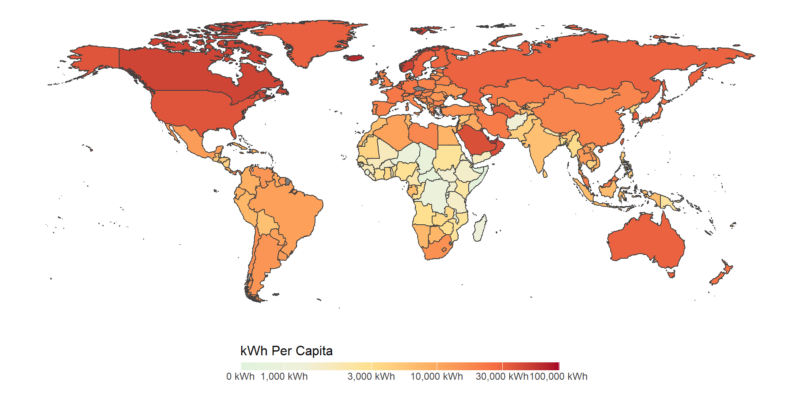
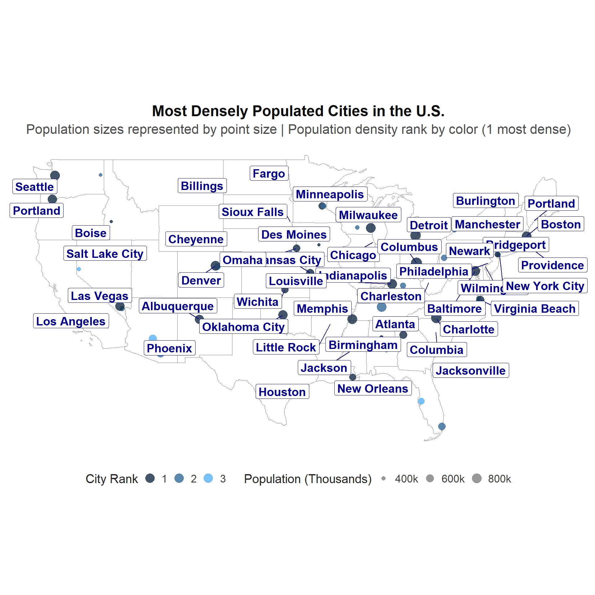
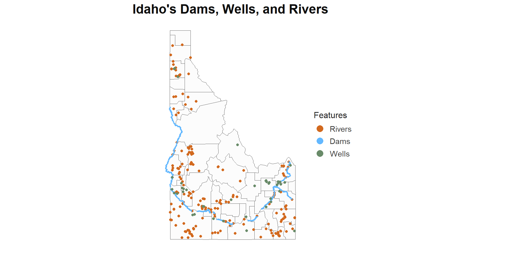

This section of my portfolio contains many Maps
Visualizations I’ve graphed throughout the years. Take a look
at them! I created each graph from scratch in R, check out the code with
the show buttons to the top right of each graph.
library(tidyverse)
library(sf)
library(viridis)
library(RColorBrewer)
library(cowplot)
enuse <- read_csv("enuse.csv") %>%
rename(enused = `Primary energy consumption per capita (kWh/person)`, region = Entity, year = Year, code = Code) %>%
filter(year == 2021) %>%
mutate(region = case_when(
region == "United States" ~ "USA",
region == "Democratic Republic of Congo" ~ "Democratic Republic of the Congo" ,
region == "Congo" ~ "Republic of Congo",
region == "Cote d'Ivoire" ~ "Ivory Coast",
region == "United Kingdom" ~ "UK",
TRUE ~ region))
enuse$enused <- log(enuse$enused)
breaks <- c(0, 1, 2, 3, 4, 5)
labels <- as.character(breaks)
world_map <- map_data("world") %>%
filter(!(region %in% c("French Southern and Antarctic Lands", "Antarctica")))
world_map <- left_join(world_map, enuse, by = "region")
ggplot(world_map, aes(x = long, y = lat, group = group)) +
geom_polygon(aes(fill = enused), color = "grey25")+
scale_fill_gradientn(aesthetics = "fill",
colors = c(
"#e0f3dd",
"#f0f0d9",
"#fee090",
"#fdae61",
"#f46d43",
"#a50026"),
limits=c(5,12.3),
labels = c("0 kWh", "1,000 kWh", "3,000 kWh", "10,000 kWh", "30,000 kWh", "100,000 kWh"),
breaks = c(5,6,8,9.5,11,12.3),
guide = guide_colorbar(
barwidth = 20,
barheight = 0.5)) +
labs(
fill = "kWh Per Capita"
) +
theme_minimal() +
theme(
panel.grid.major = element_blank(),
panel.grid.minor = element_blank(),
axis.line = element_blank(),
axis.text = element_blank(),
axis.title = element_blank(),
legend.position = "bottom",
legend.title = element_text(size=12, color = "grey5"),
legend.title.position = "top",
legend.text = element_text(size = 9, color = "grey25", vjust = 3)
) 
This map portrays the energy used in Kw/h per Capita Worldwide. Darker colored countries are the ones with the highest rating.
library(tidyverse)
library(leaflet)
enuse <- read_csv("enuse.csv") |>
rename(enused = `Primary energy consumption per capita (kWh/person)`,
region = Entity,
year = Year,
code = Code ) |>
filter(year == 2021 ) |>
mutate(region = case_when(
#region == "United States" ~ "USA",
region == "Democratic Republic of Congo" ~ "Democratic Republic of the Congo" ,
region == "Congo" ~ "Republic of Congo",
region == "Cote d'Ivoire" ~ "Ivory Coast",
TRUE ~ region )) |>
mutate(enused = enused / 1000 ) |>
drop_na()
coord <- read_csv("coord.csv")|>
inner_join(enuse, by="region")
coord$enused <- round(coord$enused, 2)
write_csv(coord, "coords.csv")
leaflet(coord) |>
addTiles() |>
addMarkers(lat=~lat, lng= ~long,
popup = ~paste("Region:",
region, "<br>",
"Energy consumption:",
enused, "thousands of Kw/h per capita"))This is the same map as the first one, difference is the style and formatting. I prefer the first one, but both have their pros.
library(tidyverse)
library(USAboundaries)
library(dplyr)
library(sf)
library(USAboundariesData)
library(ggrepel)
idahoc <- us_counties(states = "Idaho")
cities <- us_cities() %>%
filter(
state_name != "Alaska",
state_name != "Hawaii",
state_name != "District of Columbia",
state_name != "Puerto Rico")
contstate <- us_states() %>%
filter(name != "Alaska",
name != "Hawaii",
name != "District of Columbia",
name != "Puerto Rico")
tops <- cities %>%
group_by(state_name) %>%
mutate(rank = round(dense_rank(desc(population)))) %>%
ungroup() %>%
filter(rank <= 3)
top1 <- tops %>%
filter(rank ==1)
ggplot() +
geom_sf(data = contstate, fill = NA, color = "grey50") +
geom_sf(data = tops, mapping = aes(size = population, color = rank), alpha = 0.8) +
geom_label_repel(
data = subset(tops, rank == 1),
mapping = aes(label = city, geometry = geometry),
stat = "sf_coordinates",
color = "darkblue",
size = 5,
max.overlaps = 50,
fontface = "bold"
) +
guides(
size = guide_legend(title = "Population (Thousands)",
override.aes = list(color = "grey50")),
color = guide_legend(title = "City Rank",
override.aes = list(size = 5))
) +
scale_color_continuous(
breaks = c(1, 2, 3),
limits = c(1, 3)
) +
scale_size_continuous(
breaks = seq(20000, 800000, by=200000),
labels = c("200k","400k","600k", "800k" ),
limits = c(200000, 800000)
) +
labs(
title = "Most Densely Populated Cities in the U.S.",
subtitle = "Population sizes represented by point size | Population density rank by color (1 most dense)",
x = NULL,
y = NULL
) +
theme_minimal() +
theme(
panel.grid = element_blank(),
axis.text = element_blank(),
axis.ticks = element_blank(),
legend.position = "bottom",
plot.title = element_text(hjust = 0.5, size = 18, face = "bold", color = "grey5"),
plot.subtitle = element_text(hjust = 0.5, size = 16, color = "grey30"),
legend.title = element_text(size = 15, color = "grey15"),
legend.text = element_text(size = 13, color = "grey25"),
)
What cities in the U.S. have the highest population density overall?
library(tidyverse)
library(sf)
library(ggrepel)
library(USAboundaries)
# Read in all four of the necessary SHP file datasets.
pacman::p_load(downloader, sf, fs, tidyverse)
wellspath <- "https://byuistats.github.io/M335/data/Wells.zip"
df <- tempfile(); uf <- tempfile()
download(wellspath, df, mode = "wb")
unzip(df, exdir = uf)
wells <- read_sf(uf)
file_delete(df); dir_delete(uf)
damspath <- "https://byuistats.github.io/M335/data/Idaho_Dams.zip"
df2 <- tempfile(); uf2 <- tempfile()
download(damspath, df2, mode = "wb")
unzip(df2, exdir = uf2)
dams <- read_sf(uf2)
file_delete(df2); dir_delete(uf2)
waterpath <- "https://byuistats.github.io/M335/data/water.zip"
df3 <- tempfile(); uf3 <- tempfile()
download(waterpath, df3, mode = "wb")
unzip(df3, exdir = uf3)
water <- read_sf(uf3)
file_delete(df3); dir_delete(uf3)
stateshapepath <- "https://byuistats.github.io/M335/data/shp.zip"
df4 <- tempfile(); uf4 <- tempfile()
download(stateshapepath, df4, mode = "wb")
unzip(df4, exdir = uf4)
stateshape <- read_sf(uf4)
file_delete(df4); dir_delete(uf4)
ID_counties <- USAboundaries::us_counties(states = "ID")
wellsfiltered <- wells |>
group_by(WellID) |>
filter(Production >= 5000)
damsfiltered <- dams |>
filter(SurfaceAre >= 50)
waterfiltered <- water |>
filter(FEAT_NAME %in% c('Snake River', 'Henrys Fork'))
ggplot() +
geom_sf(data = ID_counties,
fill = "grey99") +
geom_sf(data = damsfiltered,
aes(color = "Dams"),
show.legend = TRUE) +
geom_sf(data = waterfiltered,
aes(color = "Rivers"),
linewidth = 1,
show.legend = TRUE) +
geom_sf(data = wellsfiltered,
aes(color = "Wells"),
show.legend = TRUE) +
theme_bw() +
coord_sf(crs = st_crs(4267)) +
scale_color_manual(
name = "Features",
values = c(
"Rivers" = "steelblue1",
"Dams" = "chocolate",
"Wells" = "darkseagreen4"),
labels = c("Rivers",
"Dams",
"Wells")) +
theme_minimal() +
labs(
title = "Idaho's Dams, Wells, and Rivers"
) +
theme(
panel.grid = element_blank(),
axis.text = element_blank(),
axis.ticks = element_blank(),
legend.position = "right",
plot.title = element_text(hjust = 0.5,
size = 18,
face = "bold",
color = "grey5"),
plot.subtitle = element_text(hjust = 0.5,
size = 16,
color = "grey30"),
legend.title = element_text(size = 12,
color = "grey15"),
legend.text = element_text(size = 11,
color = "grey25")) +
guides(
color = guide_legend(override.aes = list(size = 4,
shape = 16,
linetype = NA)))
A summary of Idaho’s key rivers, dams, and wells. Overall Idaho’s water system portrayed in a map visualization.